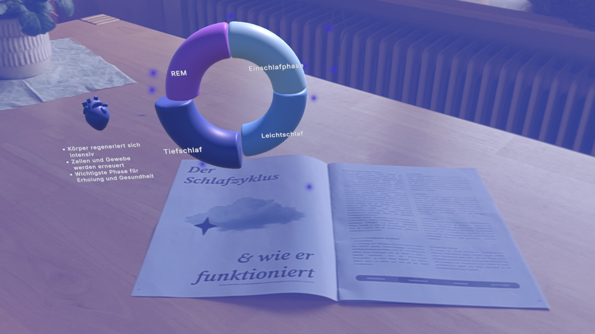
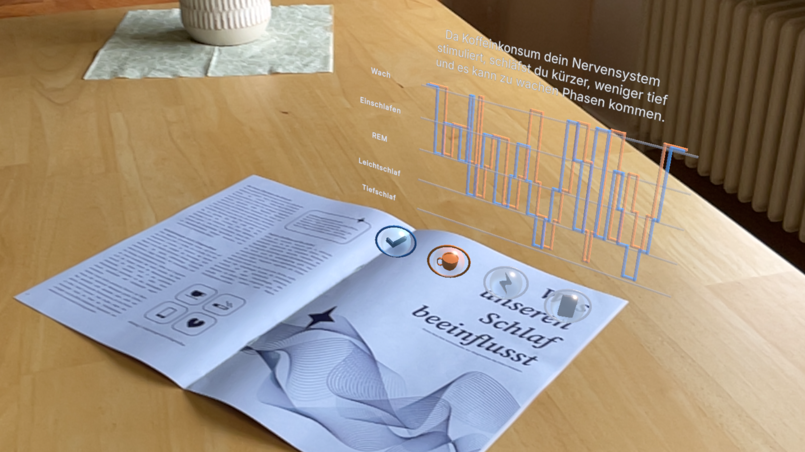
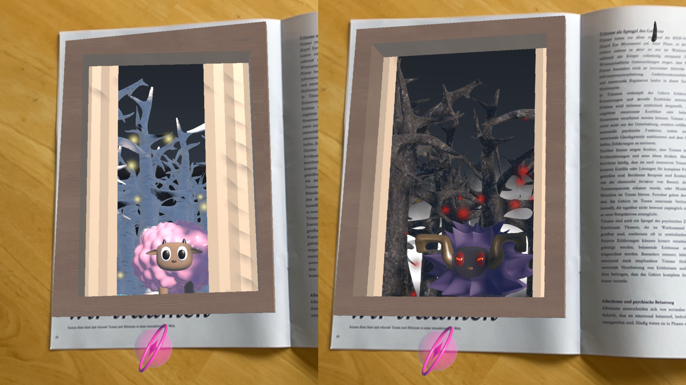
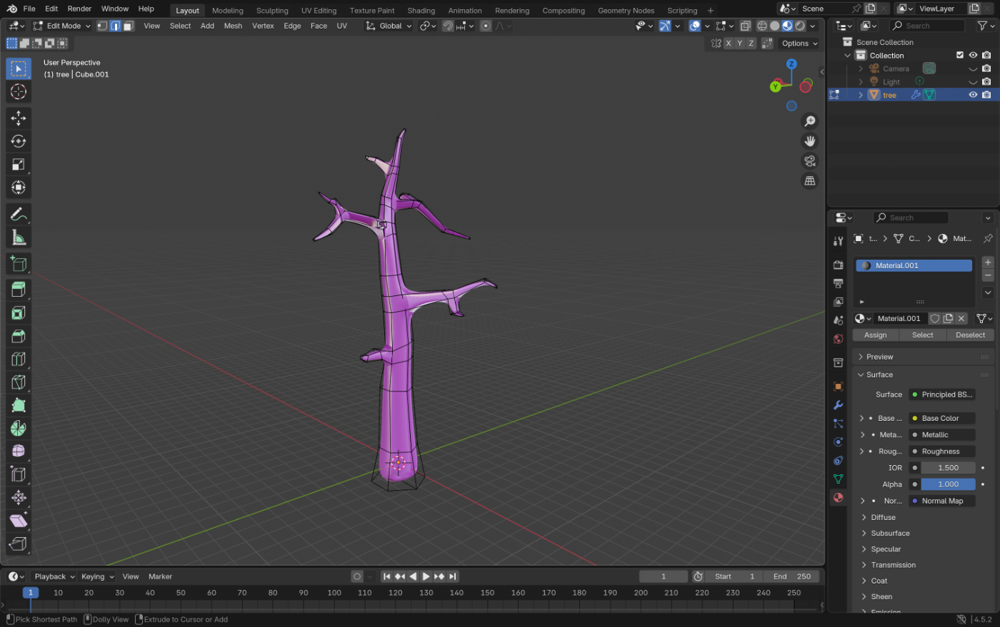

Ein Projekt, das Print und Augmented Reality verbindet, um das Thema Schlaf visuell greifbar zu machen.
Durch interaktive Elemente in der AR-Anwendung werden die Inhalte immersiv erlebbar.
Dieses Projekt entstand in Zusammenarbeit mit Vivien Hagedorn, einer Mitstudentin.
Meine
Aufgabe bestand hauptsächlich in der Erstellung der 3D-Modelle.
Mit der Maus oder dem Finger drehen & zoomen.


Das AR-Magazin „Schlaf“ verbindet traditionell gedruckte Seiten mit interaktiven virtuellen Erweiterungen, um unsichtbare Prozesse im Schlaf, wie den Schlafzyklus, greifbar zu machen und den Lesenden eine visuelle Übersetzung der textlichen Inhalte zu geben.
Während meine Partnerin sich hauptsächlich mit der Umsetzung in Unity auseinandersetzte, lag mein Fokus primär auf der dreidimensionalen Ausarbeitung in Blender. Am Konzept feilten wir stetig gemeinsam.
Die iOS-Anwendung brachten wir per Xcode auf ein iPhone und ein iPad. Wenn man die Kamera auf eine der Magazinseiten richtet, erkennt die App diese und platziert die passenden 3D-Modelle auf der Seite.
Das Projekt bot für mich einen enormen persönlichen Lernzuwachs in der 3D-Modellierung. Bei
Erstellung der Low-Poly-Modelle wandte ich diverse Techniken an, unter Anderem lernte ich mehr
über das Arbeiten mit Modifiern oder Boxmodelling.
Die Schnittstelle zwischen analogem Print-Design und digitaler Asset-Erstellung hat mein
Verständnis für medienübergreifende Gestaltung nachhaltig geprägt.
